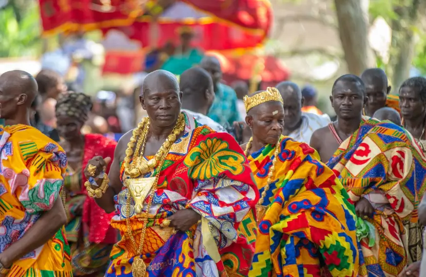
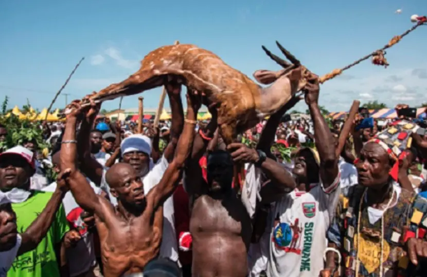
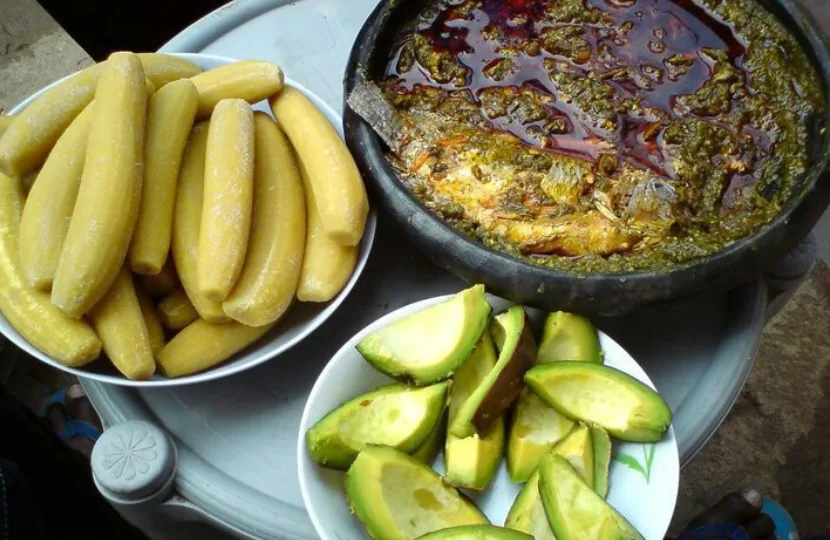

Rich Ghanaian Culture
Immerse yourself in the vibrant traditions, colorful clothing, and delicious cuisine that define the spirit of Ghana.

Art & Textiles (Kente)
Kente cloth is arguably the most famous Ghanaian cultural export. Woven on traditional wooden looms, these bright, geometric fabrics originally served as royal attire. Today, Kente represents prestige, heritage, and pride, with each distinct color and pattern carrying specific philosophical and historical meanings.
Festivals & Music
Ghanaians celebrate numerous festivals year-round, honoring ancestors, celebrating harvests, and purifying communities. Events like the Homowo, Chale Wote Street Art Festival, and Aboakyer are marked by rhythmic drumming, intricate traditional dancing, and communal joy.


Culinary Delights
Ghanaian food is flavorful, hearty, and communal. It include Kenkey, Waakye (rice and beans), and Fufu served with light soup or groundnut soup. Don't leave without trying local ripe plantain, pear and tilapia with kontomire leaves.